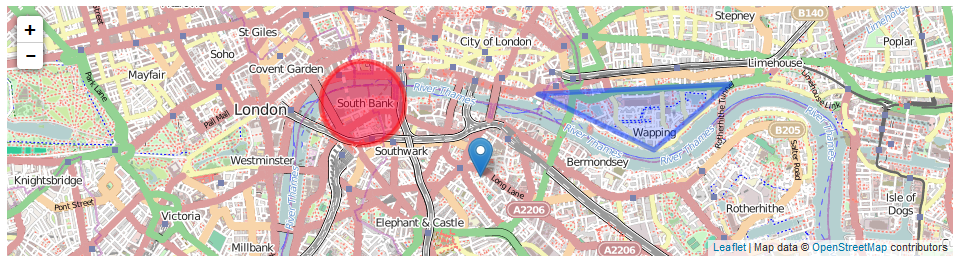
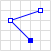
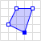
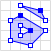
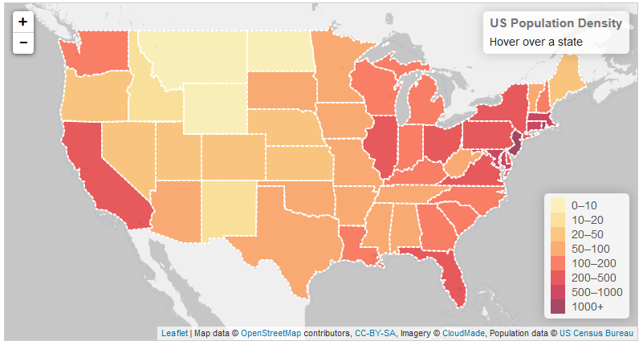

GeoJSON
An introduction to GeoJSON
By Paul Hutson / @PaulHutson
GeoJSON - What is it?
It's a GIS (Graphical Information System).
Open standard format for geographical features (or data structures) using JSON.
It differs from out GIS standards as it was written by an internet working group of developers.
Discussion about the format was started in March 2007 and was finalised in June 2008
What can GeoJSON Do?

Points
Addresses or Locations

Line Strings
Streets / Boundaries
Polygons
Countries, Counties, areas of land
Multipart Collections
i.e. Counties & their County Towns
GeoJSON - Point
{ "type": "Point",
"coordinates": [100.0, 0.0]
}
GeoJSON - Line String
{ "type": "LineString",
"coordinates": [
[100.0, 0.0], [101.0, 1.0]
]
}
GeoJSON - Polygon
{ "type": "Polygon",
"coordinates": [
[ [100.0, 0.0], [101.0, 0.0], [101.0, 1.0], [100.0, 1.0], [100.0, 0.0] ]
]
}
GeoJSON - Multipoint
{ "type": "GeometryCollection",
"geometries": [
{ "type": "Point",
"coordinates": [100.0, 0.0]
},
{ "type": "LineString",
"coordinates": [ [101.0, 0.0], [102.0, 1.0] ]
}
]
}
Testing Your GeoJSON
GeoJSONlint.comUsing GeoJSON
There are a number of different mapping and GIS packages that support GeoJSON.
OpenLayers, Leaflet, Geoforge, GeoServer, GeoDjango, GDAL, Safe Software FME and CartoDB.
Bing Maps, Yahoo! and Google also support GeoJSON in their API services.
Google Maps integration is possible using libraries (or by iterating through the data and creating equivilant objects).
GitHub also supports GeoJSON rendering.
Leaflet Code Example
Including the Leaflet CSS / JS
Leaflet Code Example
Creating the Map View - Part 1
// set up the map
var map = new L.Map('map'); // needs a corresponding on the page somewhere
Leaflet Code Example
Creating the Map View - Part 2
// create the tile layer
var osmUrl = 'http://{s}.tile.openstreetmap.org/{z}/{x}/{y}.png';
var osmAttrib = 'Map data © OpenStreetMap contributors';
var osm = new L.TileLayer(osmUrl, { minZoom: 8, maxZoom: 15, attribution: osmAttrib });
Leaflet Code Example
Set the view point and add the map tiles
// start the map in London (note, it's y,x for latlng)
map.setView(new L.LatLng(51.505, -0.09), 13);
map.addLayer(osm);
Leaflet Code Example
GeoJSON Feature
// Create a GeoJSON Feature
var geojsonFeature = {
"type": "Feature",
"properties": {
"name": "Example",
"amenity": "Example",
"popupContent": "Example!"
},
"geometry": {
"type": "Point",
"coordinates": [-0.09, 51.5]
}
};
Leaflet Code Example
Add the feature to the map...
// Create the layer and add the feature to the map
L.geoJson(geojsonFeature).addTo(map);
// Alternatively, you could do it like the below...
//var myLayer = L.geoJson().addTo(map);
//myLayer.addData(geojsonFeature);
Leaflet Code Example
Other Leaflet Items
// Point Marker
var marker = L.marker([51.5, -0.09]).addTo(map);
// Circle (not a GeoJSON Format)
var circle = L.circle([51.508, -0.11], 500, {
color: 'red',
fillColor: '#f03',
fillOpacity: 0.5
}).addTo(map);
// Polygon / Coordinate view
var polygon = L.polygon([
[51.509, -0.08],
[51.503, -0.06],
[51.51, -0.047]
]).addTo(map);
Leaflet Example 1
Leaflet Example 2
